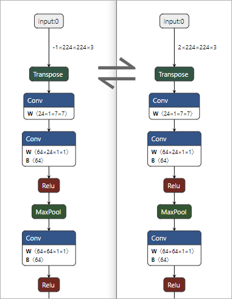

TopsIDEAS onnx batchsize
Description
转化onnx模型的batchsize
对于 dynamic batchsize 转换为 static batchsize 的情况，可以配合 fold_constant 工具去除多余的形状计算op，但是fold后不支持再次转换batchsize
对于 static batchsize 转换为 dynamic batchsize 的情况，目前不支持自动增加形状计算op，只支持转换较为简单的模型
CLI
Usage
usage: topsideas onnx batchsize [-h] --input_onnx INPUT_ONNX
[--output_onnx OUTPUT_ONNX]
[--batch_size BATCH_SIZE]
[--input_names INPUT_NAMES [INPUT_NAMES ...]]
[--output_names OUTPUT_NAMES [OUTPUT_NAMES ...]]
Arguments
short |
long |
default |
help |
|---|---|---|---|
|
|
show this help message and exit |
|
|
|
Provide original onnx file. |
|
|
|
Export the modified onnx file. |
|
|
|
Specify the batchsize, set -1 to convert to dynamic batch size. |
|
|
|
Model inputs that need to modify. If not set, all inputs will be modified. |
|
|
|
Model outputs that need to modify. If not set, all outputs will be modified. |
Example
转换成 dynamic batchsize
topsideas onnx batchsize --batch_size=-1 --input_onnx=demo.onnx --input_names=input:0 --output_onnx=demo_dynamic_bs.onnx
转换成 static batchsize
topsideas onnx batchsize --batch_size=2 --input_onnx=demo.onnx --input_names=input:0 --output_onnx=demo_bs2.onnx

API
Usage
from topsideas.onnx import Batchsize
result = Batchsize.run(input_mp)
Arguments
argument |
type |
default |
|---|---|---|
input_mp |
onnx.onnx_ml_pb2.ModelProto |
|
batch_size |
int |
1 |
input_names |
List[str] |
[] |
output_names |
List[str] |
[] |
RETURN |
onnx.onnx_ml_pb2.ModelProto |